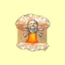

Magie temnoty
Zmrtvýchvstání
Mana: 10, Cena: 1000, Potøebná úroveò dovednosti: Normální
O¾ivení ti umo¾òuje vyzvednout mrtvou nestvùru ze spárù smrti. Zombie bude bojovat proti nepøátelùm dru¾iny, dokud znovu nezemøe, nebo dru¾ina neopustí mapu. Zombie bude mít 10 bodù zdraví za bod dovednosti Magie Temnoty a¾ po její maximum.
| Normální | Nestvùra dostane 20 bodù zdraví za bod dovednosti | |
| Expert | Nestvùra dostane 30 bodù zdraví za bod dovednosti | |
| Mistr | Nestvùra dostane 40 bodù zdraví za bod dovednosti | |
| Velmistr | Nestvùra dostane 50 bodù zdraví za bod dovednosti |
Toxický mrak
Mana: 15, Cena: 1500, Potøebná úroveò dovednosti: Normální
Pøed sesílatelem kouzla se vytvoøí jedovatý mrak zhoubných plynù a pomalu se pohybuje smìrem od tvých postav. Mrak zpùsobí 25 bodù zranìní plus 1-10 bodù za bod dovednosti Magie Temnoty.
| Normální | Støední doba zotavení | |
| Expert | Rychlej¹í doba zotavení | |
| Mistr | Rychlej¹í doba zotavení | |
| Velmistr | Nejrychlej¹í doba zotavení |
Upíøí zbraò
Mana: 20, Cena: 2000, Potøebná úroveò dovednosti: Normální
Oèaruje zbraò a pøidá jí upíøí vlastnost. Zdarví odebrané nestvùøe touto zbraní je pøidáno tomu, kdo zbraò pou¾ívá, jako extra zdraví a¾ do maximální hodnoty zdraví postavy.
| Normální | Doba trvání 1 hodina za bod dovednosti | |
| Expert | Rychlej¹í doba zotavení | |
| Mistr | Nejrychlej¹í doba zotavení | |
| Velmistr | Trvalé oèarování |
Smr¹»ovací paprsek
Mana: 25, Cena: 2500, Potøebná úroveò dovednosti: Normální
Zmen¹í nejvìt¹í z nestvùr na mnohem pøijatelnìj¹í velikost. Doba trvání tohoto kouzla je 5 minut za bod dovednosti Magie Temnoty. Zmen¹ená nestvùra dává polovinu, tøetinu èi ètvrtinu normálního zranìní.
| Normální | Zmen¹í nestvùru na polovinu velikosti | |
| Expert | Zmen¹í nestvùru na tøetinu velikosti | |
| Mistr | Zmen¹í nestvùru na ètvrtinu velikosti | |
| Velmistr | Plo¹ný efekt (Zmen¹í skupinu nestvùr) |
Støepina
Mana: 30, Cena: 3000, Potøebná úroveò dovednosti: Expertní
Vystøelí nìkolik horkých ostrých kovových støepin ve smìru pohledu dru¾iny, které zasáhnou jakoukoliv nestvùru , která se jim dostane do cesty. Ka¾dá støepina zpùsobí 6 plus 1-6 bodù zranìní za bod dovednosti Magie Temnoty.
| Normální | n/a | |
| Expert | Rychlej¹í doba zotavení a 5 støepin | |
| Mistr | Rychlej¹í doba zotavení a 7 støepin | |
| Velmistr | Nejrychlej¹í doba zotavení a 9 støepin |
Poznámka: Zranìní kouzlem Støepina se poèítá jako fyzické zranìní, lze jím tedy zranit i postavy imunní na magii.
Ovládnutí nemrtvých
Mana: 35, Cena: 3500, Potøebná úroveò dovednosti: Expertní
Pøevezme kontrolu nad myslí nemrtvého na 10 minut za bod Magie Temnoty. Ovládaný nemrtvý bude bojovat proti nepøátelùm dru¾iny po dobu trvání kouzla a nebude na dru¾inu útoèit, pokud ho nìkdo z dru¾iny nezraní.
| Normální | n/a | |
| Expert | Doba trvání 3 minuty za bod dovednosti | |
| Mistr | Rychlej¹í zotavení a doba trvání 5 minut za bod dovednosti | |
| Velmistr | Nejrychlej¹í doba zotavení a doba trvání, dokud dru¾ina neopustí mapu |
Odrá¾ení bolesti
Mana: 40, Cena: 4000, Potøebná úroveò dovednosti: Expertní
Pokud nestvùra zasáhne postavu s tímto aktivním kouzlem, bude jí zpùsobeno stejné zranìní, jaké ona zpùsobila postavì.
| Normální | n/a | |
| Expert | Doba trvání 1 hodinu + 5 minut za bod dovednosti | |
| Mistr | Pùsobí na celou dru¾inu | |
| Velmistr | Doba trvání 1 hodinu + 15 minut za bod dovednosti |
Obìtování
Mana: 45, Cena: 5000, Potøebná úroveò dovednosti: Mistrovská
Toto ïábelské kouzlo okam¾itì zabije jednoho mì¹»ana a výraznì sní¾í reputaci dru¾iny. Sesílateli se doplní mana spotøebovaná pøi seslání kouzla a jsou mu odstranìny v¹echny negativní jevy, doplnìno zdraví a vyléèeno magické zestárnutí.
| Normální | n/a | |
| Expert | n/a | |
| Mistr | Pomalá doba zotavení | |
| Velmistr | Støední doba zotavení |
Draèí dech
Mana: 50, Cena: 6000, Potøebná úroveò dovednosti: Mistrovská
Draèí dech vy¹le mrak toxických plynù na samostatný cíl a zpùsobí zranìní v¹em blízko stojícím nestvùrám 1-25 bodù zranìní za bod dovednosti Magie Temnoty.
| Normální | n/a | |
| Expert | n/a | |
| Mistr | Del¹í doba zotavení | |
| Velmistr | Støední doba zotavení |
Armageddon
Mana: 55, Cena: 7500, Potøebná úroveò dovednosti: Mistrovská
Toto kouzlo je zabíjeè mìst. Armageddon zpùsobuje 50 bodù zranìní plus 1 bod za ka¾dý bod dovednosti Magie Temnoty ka¾dé postavì na mapì, vèetnì tvých postav. Toto kouzlo mù¾e být kouzleno maximálnì tøikrát za den a jen venku.
|  | Normální | n/a |
| Expert | n/a | |
| Mistr | Mù¾e být zakouzleno tøikrát dennì | |
| Velmistr | Mù¾e být zakouzleno ètyøikrát dennì |
Vysát du¹i
Mana: 60, Cena: 10000, Potøebná úroveò dovednosti: Velmistrovská
Toto pøí¹erné kouzlo vysaje ¾ivot ze v¹ech nestvùr v dohledu - pøátel i nepøátel. Kouzlo pøesune zdraví do tvé dru¾iny stejnì jako Sdílený ¾ivot. Zranìní (a léèení) je 25 plus 1-8 bodù za bod dovednosti.
 |
Normální | n/a |
| Expert | n/a | |
| Mistr | n/a | |
| Velmistr | Toto kouzlo je tak dobré, jak jen mù¾e být! |